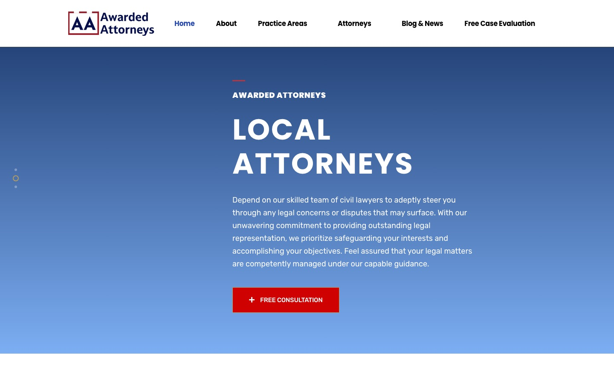
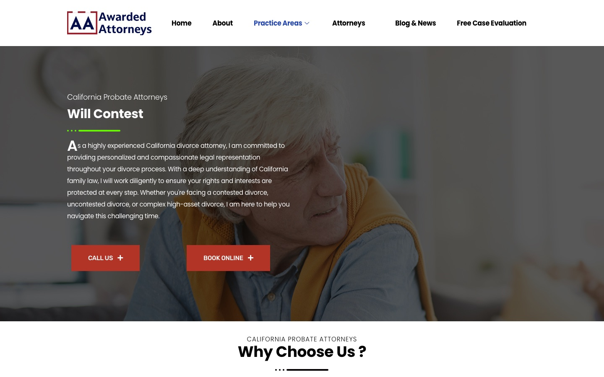

Case study · Law firms
Awarded Attorneys: WordPress and technical SEO for a civil litigation brand
A California civil litigation brand covering family, probate, business and real estate disputes. This page describes how the site is built, what technical SEO is in place, and what a review of its public pages found.
At a glance
- Who it's for
- A civil litigation brand that wants each practice area, and each attorney, to have a page of its own and a clear route to a free case evaluation.
- Core stack
- WordPress, Elementor, All in One SEO Pro, Gravity Forms, Google Analytics via MonsterInsights
- What sets it apart
- A large content footprint for one brand: 15 service pages, 18 attorney profiles in the sitemap and a blog of roughly 237 posts, most dated 2026.
The live site
Screenshots captured in October 2026. Each opens the live page.


The challenge
Civil litigation search is crowded, and the brand covers a wide range: divorce and custody, wills and trusts, contracts, real estate, and starting or defending a lawsuit. Each topic needs a page that matches the search, not one general page.
The site also leans on its attorneys. A visitor needs to see who would handle the matter and be able to ask for a free case evaluation without hunting for the form. At the same time, the content has been produced in volume, and a site this size needs checks that each page says what its URL says.
What is built
The site runs on WordPress with Elementor and the Privsa theme. Services and attorneys are custom post types, served at /service/ and /team/, with a hub page for each (/practice-area/ and /attorneys/). The blog sits at /blog/, with posts filed under a Legal category.
Every page repeats the same call and book-online buttons and a "Schedule your Free Case Evaluation" block. The case-evaluation page is a Gravity Forms form that begins with name, email, phone, zip code and a California or outside-California location choice, then continues on a second page with the case type.
Key pages and structure
Read from the sitemap index and the live pages.
- 01
Service pages
15 pages under
/service/. Family law: divorce, custody, spousal support, child support, restraining orders and a family law overview. Probate: probate litigation, will contest, estate administration litigation and trust disputes. Civil: business litigation, contract dispute, real estate litigation, start a lawsuit and defend from a lawsuit. - 02
Attorney profiles
18 profiles under
/team/in the sitemap; 11 are linked from the homepage. Whether the other seven are linked elsewhere on the site could not be confirmed. Each profile carries Person schema. - 03
Blog
About 237 URLs in the post sitemap: 9 dated 2023, 12 dated 2024, 38 dated 2025 and 177 dated 2026. Recent titles are "How courts resolve..." and "How courts evaluate..." explainers on trusts, contracts and corporate disputes.
- 04
Free case evaluation
A multi-page Gravity Forms intake, linked from a repeated call to action on every page.
- 05
Supporting pages
About, FAQ, privacy policy, disclaimer, terms and conditions, a thank-you page, and a "not viable" page.
Technical SEO baseline
What is in place on the live site, confirmed in the page source, sitemaps and server responses.
- Service and team post types/service/ and /team/ slugs
- AIOSEO Pro 4.5.3.1title, description, canonical
- JSON-LDOrganization, WebSite, WebPage, breadcrumbs
- Sitemap index13 child sitemaps, in robots.txt
- Gravity Forms and GA4case evaluation, tracked
- Every page checked (home, divorce, will contest, an attorney profile and the case-evaluation page) returns a canonical tag (a tag that tells search engines which address is the main one) pointing to itself and
max-image-preview:large. - JSON-LD (structured data that describes the page to search engines) includes Organization, WebSite with a SearchAction (markup describing the site's search box), WebPage and BreadcrumbList; service and attorney pages add Person and ImageObject.
- robots.txt (the file that tells search engines which areas to skip) blocks only
/wp-admin/(allowing admin-ajax.php) and lists bothsitemap.xmlandsitemap.rss. - The sitemap index lists 13 child sitemaps: posts, pages, services, team, cases, categories, tags and others.
- The WordPress REST API link header and a GA4 measurement tag (via MonsterInsights) are present on the homepage.
Audit findings
Where the site still has room to improve.
Heading structure
The homepage renders no H1 in the source; its headings are all H2 (second-level headings) and below. The will-contest page has one H1, but it reads "Why Choose Us ?", which says nothing about the topic. The divorce page, by contrast, has a topical H1. One descriptive H1 per page is the fix.
Duplicated and mismatched copy
The will-contest page's hero intro ("As a highly experienced California divorce attorney, I am committed to...") is word for word the same as the divorce page's. A probate page that opens with divorce copy confuses readers and gives search engines near-duplicate text. Each service page needs its own introduction.
Image alt text
12 of 22 images on the homepage have empty alt attributes. The same pattern shows on inner pages: 10 of 15 on will-contest, 8 of 10 on the Amiel Wade profile and 5 of 7 on the case-evaluation page. Descriptive alt text on attorney photos and section graphics is commonly recommended.
Title tags
Every page title ends with the same "| Award Winning California Attorneys" tail, and the homepage starts with "Home -". Leading with the practice and "California" would use the most valuable words better.
Meta description on the homepage
The homepage meta description is 355 characters of body copy that stops mid-sentence ("...we are poised to offer you"). It is longer than a search result will show and should be rewritten as a short summary.
Open Graph and sharing
Open Graph tags (tags that control how a link previews when shared) are present (locale, site name, type, title, description, URL) but no og:image (the preview picture tag) was found on the five pages checked, so shared links have no preview image.
Caching and runtime
HTML is served with
cache-control: no-store, no-cache, must-revalidateand a PHPSESSID cookie is set on the homepage. The server reports PHP 7.4.33, which has reached end of life. Page caching and a current PHP version are commonly recommended for speed and security.Version drift and theme
The page source reports WordPress 6.4.13, Elementor 3.18.3 and AIOSEO Pro 4.5.3.1, and the theme path is
privsa. Whether newer releases are available could not be confirmed from public pages. The x-powered-by header also reports PHP/7.4.33. A regular update routine for WordPress, the page builder, plugins and PHP is worth setting up.Sitemap clutter
The sitemap index lists builder and form content types (ElementsKit content and templates, MetForm forms) and a case-study type, alongside the real pages. The page sitemap also includes template pages such as
case-study-single. Non-content types are usually left out of a sitemap.Brand and ownership signals
The footer says "Recognized Legal Experts owns and operates California Legal Professionals" and the copyright line reads "©2023, Wade Litigation", while the site is named Awarded Attorneys. The copyright year is also three years old. A consistent legal name and a current year are commonly recommended.
Technology stack
Taken from the page source and response headers.
- Platform
- WordPress 6.4.13
- Elementor 3.18.3
- Privsa theme
- ElementsKit Lite
- Exclusive Addons
- SEO
- All in One SEO Pro 4.5.3.1
- JSON-LD schema
- XML sitemap index
- Leads and analytics
- Gravity Forms
- MetForm
- MonsterInsights
- GA4
- Hosting
- Apache
- PHP 7.4.33
Business value
What the setup enables. No ranking or traffic numbers are claimed.
- Gives each practice area and each attorney a page of its own, with clean URLs and consistent metadata.
- Keeps search engines informed through canonicals, schema and a full sitemap index.
- Offers a free consultation or case evaluation (the label differs between the hero button and the navigation), with call and book-online buttons repeated across the site.
- Turns a page-by-page review into a short, ordered fix list: headings, duplicated copy, alt text, titles, caching and PHP.
Part of the same site network
Awarded Attorneys links to four other California law-firm sites that share design and content patterns; each is described in its own case study. This site's footer reads "Recognized Legal Experts owns and operates California Legal Professionals" and "©2023, Wade Litigation"; this page draws no conclusion about who owns the other sites.
Legal Cali
WordPress and technical SEO for a multi-practice California law firm.
Wade Litigation
Location-page SEO and intake for a California litigation firm.
California Probate Attorneys
A probate-only niche site.
California Civil Attorneys
Service-page SEO for a civil litigation site.
Need SEO and WordPress work like this?
Tell us what the site needs to do and we will scope it with you on a call.